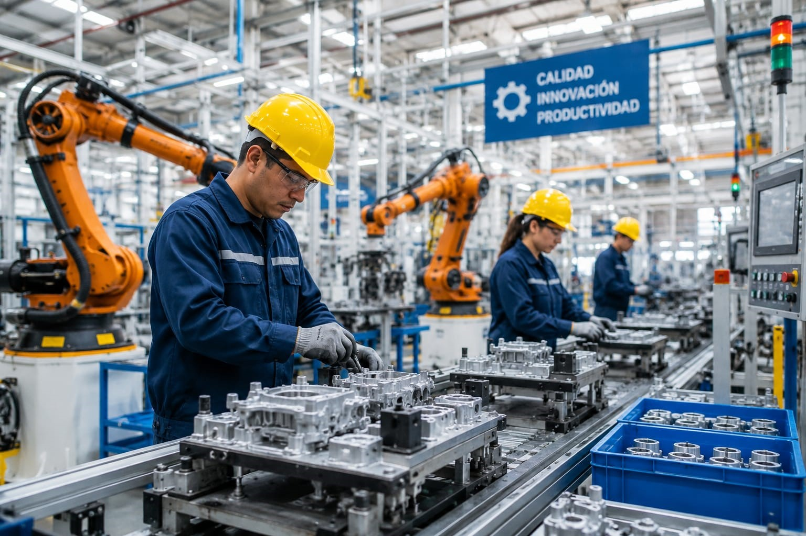

🤖 Tecnología e innovación
Inteligencia Artificial
Introducción al desarrollo de software, automatización, análisis de datos y algoritmos capaces de identificar patrones.
Educación • Innovación • Futuro
El bachillerato tecnológico combina materias de formación general con módulos profesionales prácticos. Su duración es de tres años.
Esta modalidad permite desarrollar competencias laborales y continuar estudios universitarios o incorporarse al trabajo. El título profesional requiere completar los trámites correspondientes.
Introducción al desarrollo de software, automatización, análisis de datos y algoritmos capaces de identificar patrones.
Protección de sistemas informáticos, redes, dispositivos y datos frente a amenazas digitales.
Estudio de circuitos, componentes electrónicos y tecnologías utilizadas en dispositivos y sistemas modernos.
Desarrollo de proyectos visuales, edición digital, comunicación gráfica y manejo de herramientas multimedia.
Organización de inventarios, almacenamiento, distribución y administración de mercancías.

Diagnóstico y mantenimiento de maquinaria, sistemas mecánicos, eléctricos y equipos industriales.
Conocimientos de motores, sistemas mecánicos, diagnóstico y mantenimiento de vehículos.
✦ Usa las flechas para descubrir nuestras especialidades ✦